Use Case
Companies have very important business processes and critical applications
running on the EC2 instances and its mandate that these EC2 instances run
continuously without any interruption. Fixed AutoScaling can be used to make
sure that the number of instances is one or a specific number of EC2 instances all
the time.
Still for some reason if the EC2 instances goes down, it would be good to get notified instantaneously for any action to be take on behalf on an operator. For, the same we can use a combination of EventBridge and SNS. As soon as an EC2 gets terminated or stopped we do get a email notification. A Lambda function can also be triggered to implement a custom logic.
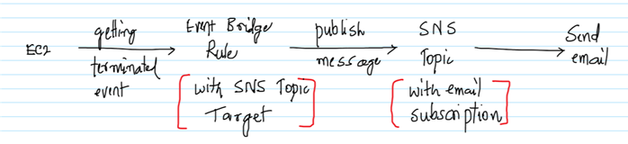
AWS Services: EventBridge, SNS, EC2
-- Create an EC2 instance and make sure to note down the Instance ID. It doesn’t matter if a Linux on Windows OS is used, but launch a t2.micro EC2 instance as it falls under the free tier.
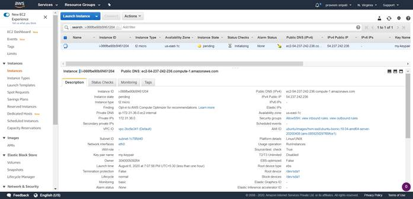
-- Go to the SNS Management Console, enter the topic name as “EC2NotificationTopic” and click on “Next step”.
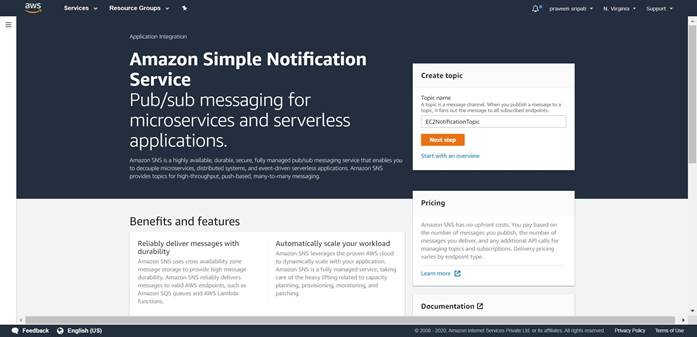
-- Go with all the default options and click on “Create topic”.
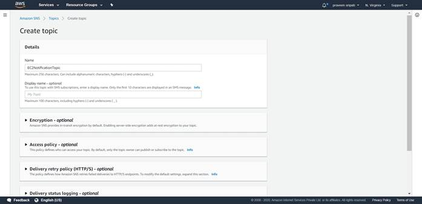
-- Once the Topic has been created, click on “Create subscription”.
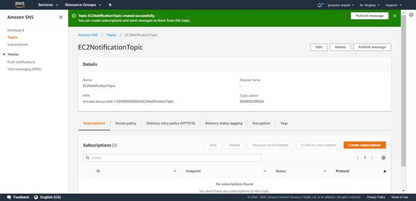
-- Select Email as the protocol and enter a valid email address. Click on
“Create subscription”.
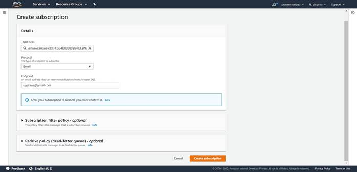
-- The subscription initially will be in a “Pending confirmation” status.
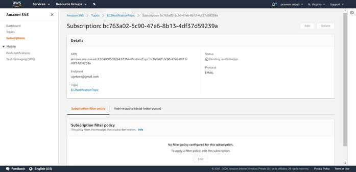
-- Check the email and there should be an email from AWS SNS Service for confirming the subscription. Click on “Confirm subscription” to confirm.
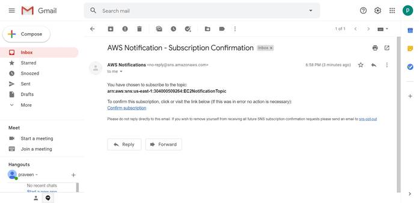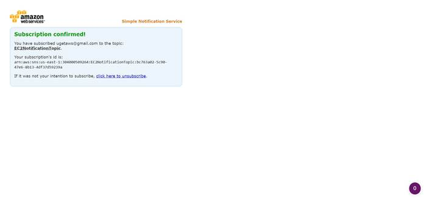
-- Go back to the SNS Management Console, the Status of the Subscription should be changed to ‘Confirmed’.
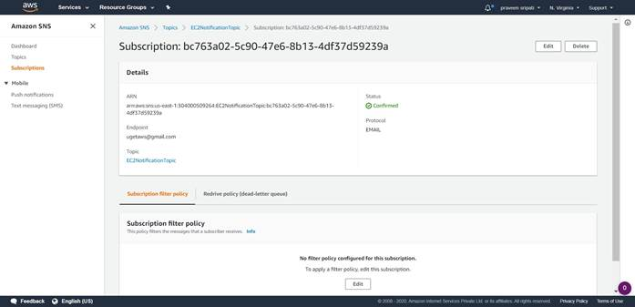
-- Goto to the EventBridge Management Console and click on “Create rule”.
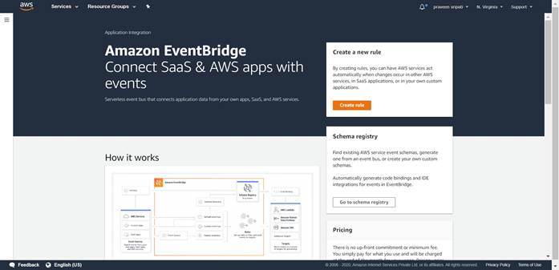
-- Enter the rule name and some description.
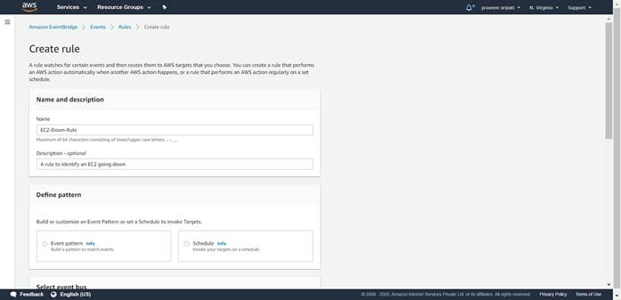
-- Select the below
-- Event Patterns
-- Pre-defined patterns by service
-- AWS for the Service provider
-- Service name as EC2
-- Event type as “EC2 Instance State-change Notification”
-- Select “Specific States”
-- Select the states as shown below
-- Select “Specific instance ids”
-- Enter the instance id of the EC2 instance created earlier.
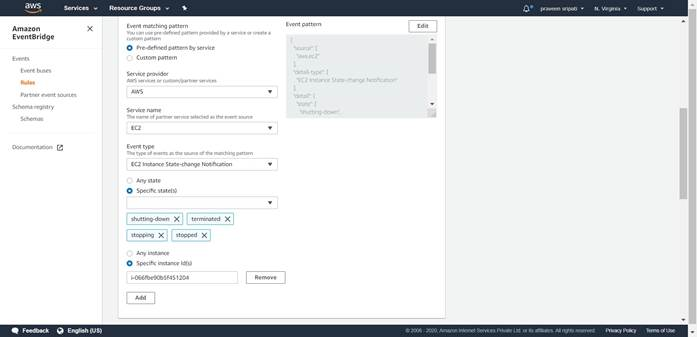
-- Under the “Select targets” section click
on “Add target”.
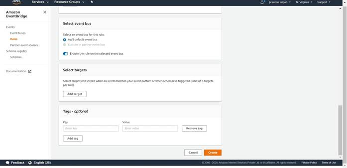
-- Select “SNS topic” as the Target and then the Topic which was created in the
previous steps and click on Create.
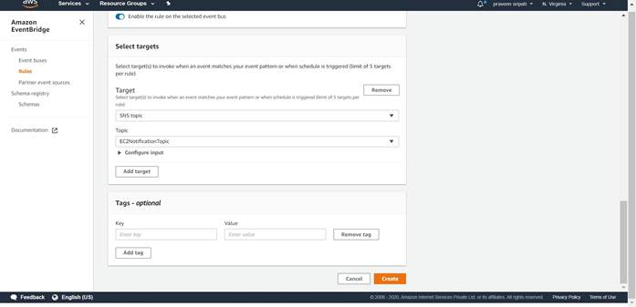
-- The Rule would be created as shown below and would be in Enabled Status.

-- Go back to the EC2 Management Console and Stop the EC2 instance, this is one of the Event captured in the EventBridge.
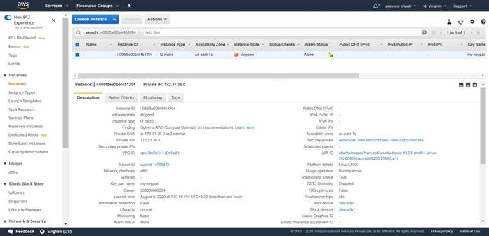
-- The EventBridge Event will publish a message to the SNS Topic, which will send an email as shown below detailing a change in the EC2 status.
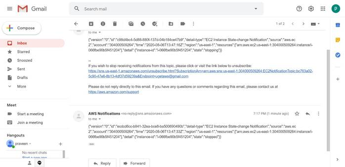
We proved that whenever the EC2 is terminated or stopped we do get a notification via email and appropriate action can be taken. A Lambda function with some custom logic can also be executed.